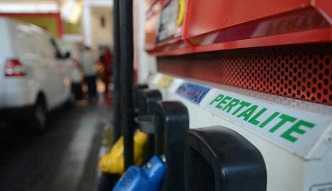

Tiga Faktor Dibalik Keunggulan Pertalite
Dalam acara Pertalite Beat OTOMOTIF Record yang diselenggarakan di SPBU Pertamina MT Haryono, Jaksel Sabtu lalu (19/11), terpapar data-data menarik mengenai keunggulan Pertalite.
Read More...

Minggu, 10 November 2016 –